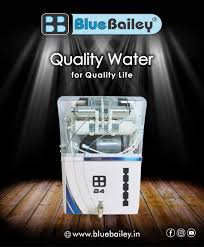
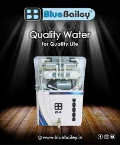

Welcome to
Arhan Sales
We at Arhan Sales provides best in class RO Water filter service and sales of water purifiers and spares at Nagpur and nearby areas.
 

15 LPH RO
Features:
High TDS Membrane-15 LPH Flow Rate-Our Pearl Ultra RO Purifier has a High TDS membrane which can purify maximum pollutants in water input as it is equipped with a Hard Water TDS membrane.
Alkaline Water-Pearl Ultra RO purifier provides alkaline water. It increases the pH level of water in the range of 7.5-8.5
It helps in maintaining the pH of water which is essential for the human body and mind.15 Liter Storage Tank-This water storage tank holds clean water after reverse osmosis filtration until you're ready to use it.
It has a storage capacity of 15 liters so that your pure water can be reserved for later use.UV Filter-The UV lamp causes immediate purification of water so that you can get clean and safe drinking water. As we know purified water is essential to you and your family. The product gives you clean, disinfected, and pure water that is free from bacteria, and viruses.
Advantages:
Purifies water:RO systems can purify any kind of water.
Removes contaminants: RO systems can remove harmful contaminants like lead, nitrates, and nitrites.
Improves taste: RO systems can enhance the taste of beverages like tea and coffee.
Reduces hardness:RO systems can reduce the level of hardness in water.
Maintains minerals:RO systems can maintain essential minerals in water.

50 LPH RO Plant
Features:
Quality Reverse Osmosis - Nowadays everyone does promise for best RO water plant service, but rare of them are high performing. We speculate all such issues associated with the reverse osmosis process of water purifiers and thus create superior products which are able to provide quality water filtering process.
Affordable Price - When you want to procure quality products, manufacturers try to capitalize on it. But, this is not in our service protocol. We take only genuine money as reliability of customers are above anything else. So, when you ask for our RO water purifier, remain confident that you will be getting suitable product in affordable price.
Advantages:
- Best for Big Offices, Corporates, Factories, Hospitals, and Schools, etc.
- Suitability of bottled water inside your own premises.
- No need to take more risk of buying counterfeit bottled water.
- No more troubles of stocking and carrying of bottles.
- With your RO plant running pure water every time in a day, you can get as much as pure water all you need and want, by touching with the finger.
- For Economical, Purity, Taste, Health, & Convenient to use. Purify any source of water like bore-well, overhead storage tank underground water, & municipal tap water.

25 LPH RO Plant
Features:
Non–Corrosive - Well, you have seen metals start depleting due to water storage around them and the reason remain Corrosion. Our products are designed in a way that no corrosion affect them ever. You will be finding quality and non-corrosive water constantly..
Mineral-rich Water - Most of the RO plant water lack essential minerals and thus they remain no more health-oriented. Water must contain vital ions and minerals so that it can boost further metabolic activities of our body. Our body should not starve for the sake of good and adequate water supply.
Long-lasting RO Plants - If you want RoI on your 25 LPH RO plant, we truly owe your expectations. Our products are made with state of the art technology to provide them a prolonged longevity and customers can relish their service for a long time.
Installation and Repairing Service - We provide free installation for our RO water plants. You will warranty for our products which include free repairing service for that time period as well. Aquafresh is ready to entertain you with pure and safe water supply. If you want to order then contact us before it gets late.
Advantages:
- Your beverages like Tea, Coffee, etc. will taste much better.
- Removes harmful metals like lead, mercury, etc. from the water.
- Removes Cryptosporidium which is commonly found in public water supply.
- Maintain the sodium level in the water.
- Best suited for Small offices, Play Schools, Clinics, etc.
- Clean and crystal clear ice cubes with 100% clean water.
- No need to purchase expensive mineral water.
- Easy to maintain.
- Your beverages like Tea, Coffee, etc. will taste much better.
- Removes very harmful contaminants like lead, nitrates, and nitrites which can cause kidney stones.


RO Water Filters & Purifiers
Features:
Loss of minerals: RO refinement process brings about a deficiency of fundamental minerals expected by the body. The ready client ought to check for this and picked an item that limits this.
Sanitization process: Most RO purifiers will have different filtration processes. Numerous purifiers consolidate fundamental highlights of RO, UV, UF, TDS control, turbidity, and so on in a solitary framework. The bigger number of phases of filtration will make the water cleaner. Some RO frameworks likewise have auto flush clocks to guarantee ceaseless refinement and furthermore to upgrade the existence of the film channel.
High Water Recuperation: Check for how much water gets squandered as a piece of the cleaning system. Proficient water purifiers will have an extremely high recuperation of water with less wastage. Now and again, just 20% of the delta water will be squandered. There are items in the market with no wastage too.
Capacity and cleaning limit: Check for the capacity limit of the purifier. The pace of water refinement concerning litres/hour will help you pick the right limit item for your family. Many channels likewise have a system to protect water from microorganisms and different pollutions for 7 days.
Size and unique pipes prerequisites: Check for the size of the RO framework and whether it finds a place in your space in the kitchen. Likewise, check to assume there are any exceptional pipes necessities for a water channel/outlet or a particular water pressure prerequisite. This will guarantee that there will be no curve balls whenever you have bought the item.
Support cost: RO is a generally excellent water purifier framework to use for the family. Be that as it may, notwithstanding the forthright expense of acquisition of the item one ought to likewise remember the common expense of keeping up with the item. Additionally, remember the guarantee time frame and the post-buy administration levels of the brand.
Advantages:
It is the best method for water softening.
The semipermeable membrane will block all ion particles.
The maintenance of the system is very simple.
It gives us clean and pure water by blocking all contaminants.
The available RO systems are very compact, and it requires little space.
The useful life of the full system, including the membrane, is over two years.
This system does not require any use of chemicals to purify water.
The energy requirement for the RO system is very low.
RO systems are totally automated and are designed to start and stop on their own.